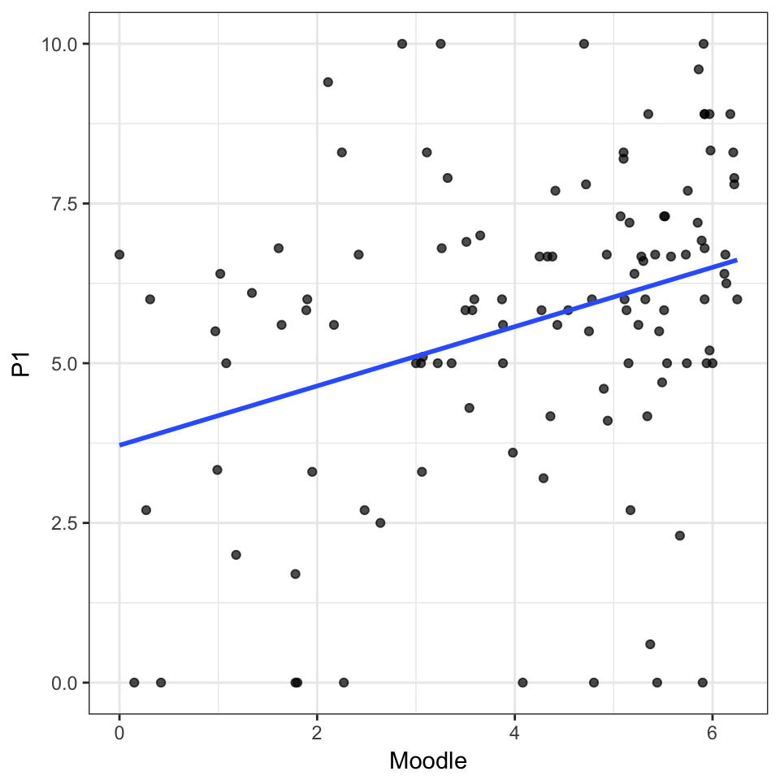
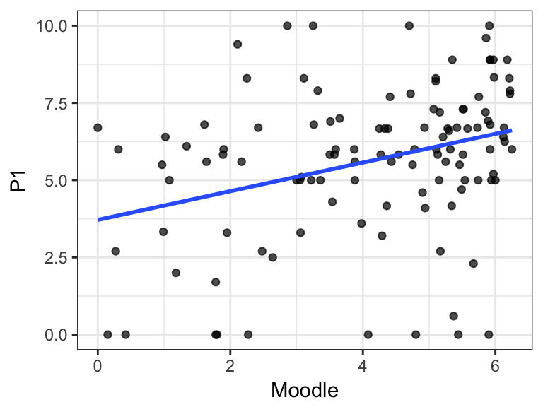
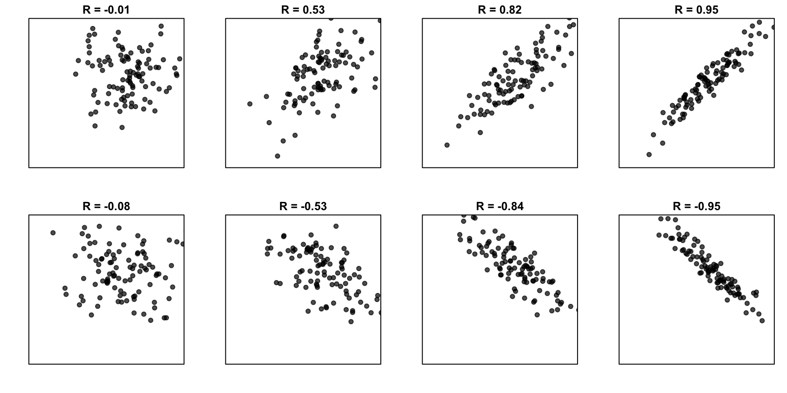
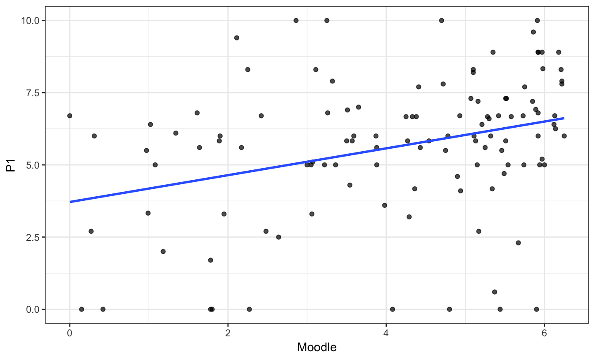
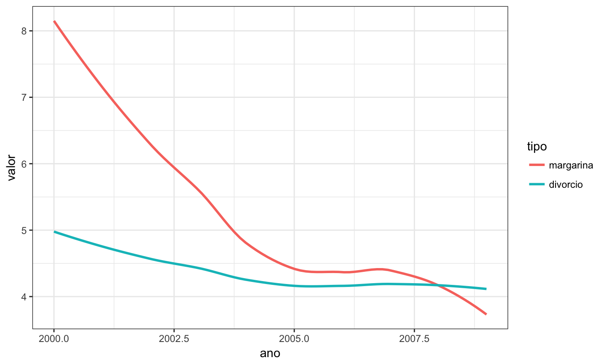

Correlação e Regressão Linear Simples
Problema
Na última aula, trabalhamos com o conjunto de dados refere às notas do Moodle e da Prova P1 de 453 alunos matriculados em ME414 no 2S2015.
Hoje, focaremos nas observações referentes a 116 alunos que obtiveram, no máximo, 6.25 pontos nas atividades do Moodle.
Nosso objetivo é inferir a respeito da associação das notas (absolutas) das atividades disponibilizadas no Moodle com aquelas da Prova P1.
Moodle (\(\leq 6.25\)) e Notas da Prova P1
| Moodle | P1 |
|---|---|
| 5.98 | 8.33 |
| 3.00 | 5.00 |
| 2.42 | 6.70 |
| 2.11 | 9.40 |
| 3.88 | 5.00 |
| 2.86 | 10.00 |
Como Explicar essa Associação?

Explicando Associação Linear
- Coeficiente de correlação
- Quantidade no intervalo \((-1, 1)\);
- Mede a força da associação linear em função da dispersão dos dados;
- Modelo de regressão linear simples
- Estima a forma \(Y = \hat{\alpha} + \hat{\beta}X\);
- O modelo é linear nos parâmetros
Correlação Linear
Introdução à Correlação Linear
- Denotamos a correlação por \(R\);
- \(R = -1\), associação linear negativa entre X e Y;
- \(R = 0\), ausência de associação linear entre X e Y;
- \(R = +1\), associação linear positiva entre X e Y;

Diferentes níveis de correlação

Determinação do Coeficiente de Correlação
Hipóteses:
- Duas variáveis contínuas: \(X\) e \(Y\);
- \(n\) pares de observações: (\(X_i, Y_i\));
Fórmula 1
\[ \begin{aligned} R & = \frac{\sum_{i=1}^n (X_i - \bar{X})(Y_i - \bar{Y})}{\sqrt{\sum_{i=1}^n (X_i-\bar{X})^2}\sqrt{\sum_{i=1}^n (Y_i-\bar{Y})^2}} \\ & = \frac{S_{XY}}{\sqrt{S_{XX}^2 S_{YY}^2}} = \frac{S_{XY}}{S_{XX}S_{YY}} \end{aligned} \]
Notem que \(S_{XX}^2\) e \(S_{YY}^2\) são as somas de quadrados de \(X\) e \(Y\) corrigida por suas respectivas médias.
\[ \begin{aligned} S_{XY} & = 157.99 \\ S_{XX} & = 18.45 \\ S_{XY} & = 26.41 \\ R & = 0.3243 \end{aligned} \]
Fórmula 2
\[ \begin{aligned} R & = \frac{\sum_{i=1}^n (X_i - \bar{X})(Y_i - \bar{Y})}{\sqrt{\sum_{i=1}^n (X_i-\bar{X})^2}\sqrt{\sum_{i=1}^n (Y_i-\bar{Y})^2}} \\ & = \frac{1}{n-1} \sum_{i=1}^n \frac{(X_i - \bar{X})}{s_X} \frac{(Y_i - \bar{Y})}{s_Y} \end{aligned} \]
Notem que \(s_X\) e \(s_Y\) representam os desvios-padrão amostrais de \(X\) e \(Y\), respectivamente.
\[ \begin{aligned} \sum_{i=1}^n \frac{(X_i - \bar{X})}{s_X} \frac{(Y_i - \bar{Y})}{s_Y} & = 37.29 \\ n-1 & = 115 \\ R & = 0.3243 \end{aligned} \]
Fórmula 3
\[ \begin{aligned} R & = \frac{\sum_{i=1}^n (X_i - \bar{X})(Y_i - \bar{Y})}{\sqrt{\sum_{i=1}^n (X_i-\bar{X})^2}\sqrt{\sum_{i=1}^n (Y_i-\bar{Y})^2}} \\ & = \frac{1}{n-1} \frac{\sum_{i=1}^n X_i Y_i -n \bar{X}\bar{Y}}{s_X s_Y} \end{aligned} \]
Observem que \(\bar{X}\) e \(\bar{Y}\) representam as médias amostrais de cada uma das variáveis; e \(s_X\) e \(s_Y\) são os desvios-padrão amostrais de cada uma das variáveis.
\[ \begin{aligned} \bar{X} = 4.14 \quad \bar{Y} = 5.64 \quad n-1 & = 115 \\ \frac{\sum_{i=1}^n X_i Y_i -n \bar{X}\bar{Y}}{s_X s_Y} & = 37.29 \\ R & = 0.3243 \end{aligned} \]
Regressão Linear Simples
Terminologia em Regressão Linear Simples
- Um modelo de regressão possui, pelo menos, duas variáveis:
- Variável independente, variável exploratória, variável preditora, covariável: \(x\);
- Variável dependente, variável resposta: \(y\);
- Para alunos com notas de atividades de no máximo 6.25, como as notas das atividades se associam com a nota da prova P1?
- Variável dependente (resposta): nota da prova P1;
- Variável independente: nota das atividades do Moodle;
Forma do Modelo
- O modelo de regressão usual descreve associação linear: \[ Y= \alpha + \beta X + \epsilon. \]
- Neste modelo, os termos adicionais são:
- \(\alpha\): intercepto;
- \(\beta\): coeficiente angular;
- \(\epsilon\): erro observacional;
- Considerar o erro é necessário, pois associações perfeitas são improváveis;
Forma do Modelo

Hipóteses do Modelo de Regressão Linear
- Modelo de regressão linear assume:
- Linearidade entre variáveis;
- Erros aleatórios nas observações;
- Erro tem média zero;
- Variância constante do erro \(\sigma^2\);
- Desta forma, a variável aleatória Y, \[Y = \alpha + \beta X + \epsilon, \] possui as seguintes características:
- \(E(Y) = E( \alpha + \beta X + \epsilon) = \alpha + \beta X\)
- \(\mbox{Var}(Y) = Var( \alpha + \beta X + \epsilon) = Var(\epsilon) = \sigma^2\)
Como saber se a Regressão Linear é adequada?
- Utilizar diagramas de dispersão;
- Analisar visualmente a forma de associação entre X e Y;
- Buscar associação linear;
- Aferir a homogeneidade da variância;
- Buscar informação sobre independência das observações.
Exemplo: Notas no Moodle e P1
Na última aula, trabalhamos com o conjunto de dados refere às notas do Moodle e da Prova P1 de 453 alunos matriculados em ME414 no 2S2015.
Hoje, focaremos nas observações referentes a 116 alunos que obtiveram, no máximo, 6.25 pontos nas atividades do Moodle.
Nosso objetivo é inferir a respeito da associação das notas (absolutas) das atividades disponibilizadas no Moodle com aquelas da Prova P1.
Exemplo: Notas no Moodle e P1
| Moodle | P1 |
|---|---|
| 5.98 | 8.33 |
| 3.00 | 5.00 |
| 2.42 | 6.70 |
| 2.11 | 9.40 |
| 3.88 | 5.00 |
| 2.86 | 10.00 |
Exemplo: Notas no Moodle e P1

Escolha da Melhor Reta
Um modo de determinar a melhor reta é pelo meio da minimização da soma dos erros quadrados:
- Determinar a função a ser minimizada;
- Determinar a primeira derivada com respeito aos parâmetros de interesse;
- Igualar estas derivadas a zero;
- Verificar segundas derivadas;
Escolha da Melhor Reta
\[ \begin{aligned} Y_i & = \alpha + \beta X_i + \epsilon_i \\ f(\alpha, \beta) = \sum_{i=1}^n \epsilon_i^2 & = \sum_{i=1}^n (Y_i - \alpha - \beta X_i)^2 \\ \frac{\partial f(\alpha, \beta)}{\partial \alpha} & = -2 \sum_{i=1}^n (Y_i - \alpha - \beta X_i) \\ \frac{\partial f(\alpha, \beta)}{\partial \beta} & = -2 \sum_{i=1}^n X_i (Y_i - \alpha - \beta X_i) \\ \hat{\alpha} & = \bar{Y} - \hat{\beta} \bar{X} \\ \hat{\beta} & = \frac{\sum_{i=1}^n (X_i - \bar{X})(Y_i - \bar{Y})}{\sum_{i=1}^n (X_i-\bar{X})^2} = \frac{S_{XY}}{S_{XX}} \end{aligned} \]
A Escolha da Melhor Reta
Exemplo: Moodle x P1
\[ \begin{aligned} \hat{\beta} = \frac{S_{XY}}{S_{XX}} & = \frac{157.9881517}{340} = 0.46 \\ \hat{\alpha} = \bar{Y} - \hat{\beta} \bar{X} & = 5.64 - 0.46 \times 4.14 = 3.72 \\ \mbox{P1} &= 3.72 + 0.46 \times \mbox{Moodle} \end{aligned} \]

Interpretação dos Parâmetros
\[ \begin{aligned} \hat{\alpha} & = 3.72 \\ \hat{\beta} & = 0.46 \end{aligned} \]
- \(\hat{\alpha}\) é a nota média na P1 para alunos com nota 0 no Moodle;
- \(\hat{\beta}\) é o aumento médio na nota da P1 para cada ponto extra no Moodle.
Observações
Erros na Interpretação de Correlação e Regressão
- Correlação e regressão apresentam associação;
- Associação não indica causalidade;
- Extrapolações não devem ser feitas;
Associações
O gráfico abaixo apresenta o número de divórcios (por 1000 casamentos) no Maine/EUA e o consumo per capita de margarina (em libras) ao longo dos anos. 
Associações
A correlação entre estas duas variáveis (número de divórcios e consumo de margarina) é 0.9926.
Considere o número de divórcios como variável resposta e o consumo de margarina como variável independente.
Temos o seguinte modelo de regressão linear:
| Estimativa | Erro Padrão | valor t | valor-de-p | |
|---|---|---|---|---|
| (Intercept) | 3.308626 | 0.0480316 | 68.88431 | 0 |
| margarina | 0.201386 | 0.0087350 | 23.05495 | 0 |
Ou seja, \[\mbox{divórcios} = 3.30 + 0.20 \times \mbox{margarina}\]
Associações
Importante lembrar que modelos de regressão descrevem associação, não causalidade.

Extrapolações
Qual o consumo esperado de margarina em 2016?
Leituras
Slides produzidos pelos professores:
Samara Kiihl
Tatiana Benaglia
Benilton Carvalho